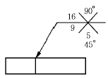

침투비파괴검사기능사 (2002-10-06 기출문제)
1과목: 침투탐상시험법(대략구분)
1. 형광침투탐상시험의 전처리 과정에서 부품에 묻어 있는 강한 산성물질을 씻어내지 않았을 경우 어떤 결과가 주원인으로 발생되는가?
- 침투제의 침투력을 저하시킨다.
- 침투시간이 길어진다.
- 침투제의 형광성을 감소시킨다.
- 얼룩이 오래동안 남아있게 된다.
(정답률: 44%)

2. 다음 중 침투속도를 증가시키는 가장 좋은 침투액의 조건은?
- 낮은 온도일 것
- 외부 압력이 낮을 것
- 비중이 클 것
- 점성계수가 작을 것
(정답률: 71%)
3. 침투탐상시험시 좋은 현상제의 조건이 아닌 것은?
- 형광성이 좋을 것
- 침투액 흡인 능력이 좋을 것
- 분산성이 좋을 것
- 화학적으로 안정할 것
(정답률: 56%)
4. 다른 침투액과 비교했을 때 수세성 형광침투액의 특성이라고 볼 수 없는 설명은?
- 얕은 개구의 결함을 검출하는데 좋다.
- 규정된 유화시간이 따로 없다.
- 침투시간 경과후 곧바로 물로 침투액을 제거한다.
- 비형광침투액을 사용했을 때 보다 검출 능력이 좋다.
(정답률: 24%)
5. 침투탐상시험시 전처리 과정이 중요한 가장 큰 이유는?
- 침투액의 더러움을 적게하기 위해서
- 침투액의 세척을 쉽게하기 위해서
- 침투액을 적용하기 쉽게하기 위해서
- 결함 검출을 용이하게 하기 위해서
(정답률: 54%)
6. 형광 침투액을 사용한 침투탐상시험에서 과잉 침투액을 현상처리에 앞서 제거해야 하는데 그 제거 여부를 확인하는 가장 적당한 조작은?
- 가압 공기로 표면을 건조시켜 본다.
- 표면에 화학처리를 하여 본다.
- 흡착지(absorbent paper)로 표면을 닦아 본다.
- 자외선등 아래에서 표면을 관찰하여 본다.
(정답률: 62%)
7. 침투탐상시험에서 현상(現像)이 잘 되었을 경우에 나타나는 결함지시 모양의 크기는 실제 결함크기와 비교할 때 일반적으로 어떠한가?
- 실제 크기와 똑 같다.
- 실제 크기보다 항상 작다.
- 실제 크기보다 일반적으로 크다.
- 실제 크기와는 무관하게 일정하다.
(정답률: 47%)
8. 유화제를 적용한 수세성 침투액의 세척때 분사식 세척이 효과적인 이유는?
- 유화 촉진
- 표면 기압 변동
- 표면온도 상승
- 물방울의 결함내 침투
(정답률: 43%)
9. 재료 두께가 100㎜인 강철판의 용접부를 비파괴검사하려 한다. 내부균열의 위치와 깊이를 검출하는데 다음 중 가장 이상적인 검사법은?
- 방사선투과검사
- 초음파탐상검사
- 자분탐상검사
- 침투탐상검사
(정답률: 65%)
10. 침투처리 과정을 거쳐 세척처리 후 현상제를 사용하지 않고 열풍 건조에 의해 시험품 불연속부의 침투액이 열팽창으로 인하여 시험품 표면으로 표출되어 지시 모양을 형성하는 현상 방법은?
- 건식 현상법
- 습식 현상법
- 속건식 현상법
- 무현상법
(정답률: 58%)
11. 다음 중 용제제거성 과잉 침투제를 제거하는 방법중 가장 좋은 방법은?
- 깨끗하고 부드러운 천으로 조심스럽게 닦아 낸다.
- 제거제에 검사물을 여러 차례 담근다.
- 검사물을 뜨거운 세제에 넣고 끓인다.
- 압축공기로 평면을 깨끗하게 불어낸다.
(정답률: 60%)
12. 다음 중 침투탐상시험시 부적절한 세척에 의하여 놓치기 쉬운 결함은?
- 단조 겹침
- 깊이 패인 결함
- 얕고 넓은 결함
- 예리한 선모양의 표면 균열
(정답률: 28%)
13. 후유화성 형광침투탐상시험-건식현상법을 조합하여 탐상할 때의 처리순서는? (단, 전처리, 관찰, 후처리 등은 생략함)
- 침투 → 건조 → 유화 → 세척 → 현상
- 침투 → 현상 → 유화 → 세척 → 건조
- 침투 → 세척 → 유화 → 현상 → 건조
- 침투 → 유화 → 세척 → 건조 → 현상
(정답률: 47%)
14. 침투탐상검사에 후유화법을 적용하려고 한다. 다음 중 가장 엄격히 지켜야 할 시간은?
- 건조시간
- 유화시간
- 현상시간
- 침투시간
(정답률: 59%)
15. 다음 비파괴검사법 중에서 표층부에 나타난 결함의 정보를 얻기 위한 검사가 아닌 것은?
- 침투탐상검사
- 자분탐상검사
- 와전류탐상검사
- 음향방출검사
(정답률: 68%)
16. 거치식(고정설치식) 침투탐상장치에서 건조장치의 사용에 대한 설명으로 올바른 것은?
- 건조온도는 감도를 높이기 위해 고온으로 유지한다.
- 건조온도를 고온으로 하면 지시모양의 색채대비가 향상된다.
- 건조시간은 최장 시간으로 하여 지시모양을 완전히 건조시킨다.
- 건조시간은 최소 시간으로 하여 수분을 건조하는 정도로 한다.
(정답률: 44%)
17. G 필터를 사용해 시험 결과를 남길 수 있는 비파괴시험법은?
- 방사선투과검사(RT)
- 초음파탐상검사(UT)
- 침투탐상검사(PT)
- 와전류탐상검사(ET)
(정답률: 22%)
18. 일반적으로 오스테나이트 계열의 스테인레스강 용접부 검사에 조합된 모두가 적용하기 곤란한 비파괴검사법은?
- 방사선투과검사(RT)와 초음파탐상검사(UT)
- 초음파탐상검사(UT)와 자분탐상검사(MT)
- 자분탐상검사(MT)와 침투탐상검사(PT)
- 방사선투과검사(RT)와 침투탐상검사(PT)
(정답률: 29%)
19. 다음 무관련 지시가 발생되는 것 중 발생 유형이 서로 다른 한가지는?
- 주조품의 거친 표면
- 프레스 압입부
- 키 홈부
- 스플라인
(정답률: 36%)
20. 다음 중 자외선등의 전구수명을 단축시키는 가장 큰 요인은?
- 필터(filter)에 금이 간 것을 사용하였을 때
- 너무 밝은 곳에서 장시간 사용하였을 때
- 전구표면에 먼지가 묻은 것을 사용하였을 때
- 사용전압의 변동이 심한 경우에 사용하였을 때
(정답률: 74%)
2과목: 침투탐상관련규격(대략구분)
21. 침투탐상시험에 사용되는 다음의 건조장치 중 가장 효과적인 것은?
- 전열식 건조장치
- 백열등식 건조장치
- 적외선식 건조장치
- 열풍식 건조장치
(정답률: 38%)
22. 자외선조사장치는 자외선을 조사하여 지시모양을 뚜렷하게 식별할 수 있는 강도를 갖는 것이어야 하는데 이 때 요구되는 자외선의 파장범위는?
- 2000 ∼ 2550 Å
- 2600 ∼ 3250 Å
- 3200 ∼ 4000 Å
- 4000 ∼ 4550 Å
(정답률: 52%)
23. 형광침투제를 사용했을 때 다음 중 나타나는 가장 공통적인 오염인 것은?
- 줄질한 금속가루
- 기름
- 청정제
- 물
(정답률: 28%)
24. 다음 중 유화제의 기능으로 올바른 설명은?
- 표면에 있는 침투액과 반응하여 수세성을 용이하게 한다.
- 침투액의 침투 능력을 도와준다.
- 얕은 개구에 있는 침투액을 빨아낸다.
- 현상제가 잘 도포될 수 있도록 도와준다.
(정답률: 53%)
25. 침투탐상시험시 건식현상제에 의한 현상은 다음 중 어떤 효과를 이용한 것인가?
- 삼투압현상
- 모세관현상
- X-선 감광
- 브롬화은에서 은의 석출
(정답률: 74%)
26. KS B 0816 규정에 의한 침투탐상시험의 다음 시험조작 과정중에서 특별히 온도에 대한 규제가 있는 것은?
- 유화처리
- 후처리
- 현상처리
- 전처리
(정답률: 38%)
27. 현상제를 적용하고서 관찰할 때까지의 시간인 현상시간은 현상제의 종류, 예측되는 결함의 종류와 크기 및 시험품의 온도에 따라 결정이 되는데 알루미늄 단조품의 갈라짐에 대한 표준침투시간이 10분이라 할 때 침투탐상시험과 관련한 KS규격에서 규정하는 표준 현상시간은?
- 3 분
- 5 분
- 7 분
- 10 분
(정답률: 52%)
28. KS B 0816의 세척처리와 제거처리에 대한 설명으로 틀린것은?
- 후유화성 침투액은 세척액으로 세척한다.
- 용제제거성 침투액은 헝겊 또는 종이수건 및 세척액으로 제거한다.
- 형광침투액을 사용하는 시험에서는 필히 자외선을 비추어 확인하여야 한다.
- 스프레이 노즐을 사용할 때의 수압은 특별히 규정이 없는 한 275kPa이하로 한다.
(정답률: 30%)
29. KS B 0816에서 유화처리를 해야 검사할 수 있는 시험방법의 기호는?
- DFA-W
- DVC-W
- DFA-S
- DFB-N
(정답률: 46%)
30. KS B 0816에서 알루미늄 재질로 생산한 제품을 침투처리 할 때 다음 중 침투시간이 다른 결함은?
- 용접부의 갈라짐
- 주조품의 쇳물경계
- 단조품의 갈라짐
- 용접부의 융합불량
(정답률: 44%)
31. KS B 0816에서 전수검사를 실시한 경우 시험체에 표시하는 방법으로 틀린 것은?
- 각인
- 도금
- 부식
- 착색
(정답률: 39%)
32. KS B 0816에서 자외선조사장치(black light)는 필터 또는 관구의 앞면에서 38cm 되는 거리의 검사 표면에서 자외선 강도가 얼마 이상이어야 하는가?
- 300μW/cm2
- 500μW/cm2
- 800μW/cm2
- 10,000W/cm2
(정답률: 75%)
33. KS B 0816에서 형광침투액을 사용하는 시험에서는 특별히 규정이 없는 한 관찰하기 전에 최소한 얼마 정도를 어두운 곳에 눈을 적응시키는 것으로 규정하고 있는가?
- 1분
- 5분
- 10분
- 30분
(정답률: 50%)
34. KS W 0914에 따르면 염색침투 탐상장치(타입 Ⅱ)의 관찰장소 백색광 조도는 얼마 만에 점검하도록 규정하고 있는 가?
- 매일
- 주 1회
- 월 1회
- 년 1회
(정답률: 52%)
35. KS B 0816에서 갈라짐 이외의 결함으로 그 길이가 나비의 3배 이상인 것을 무슨 결함이라 하는가?
- 균열
- 라미네이션
- 원형상 결함
- 선상 결함
(정답률: 63%)
36. 침투탐상시험에서 시험기록을 작성할 때 시험체의 내용에 포함되지 않는 것은?
- 품명
- 재질
- 치수
- 무게
(정답률: 62%)
37. KS 규격에서 침투액의 종류에 의한 시험방법의 분류기호 중 용제 세척액이 필요한 경우로써 다음 중 맞는 것은?
- FA, VA
- FB, VB
- FC, VC
- VA, VB
(정답률: 70%)
38. KS B 0816에서는 잉여 침투제의 물세척시 수온은 얼마로 제한하는가?
- 20‾60℃
- 10‾40℃
- 30‾70℃
- 40‾80℃
(정답률: 83%)
39. KS B 0816에 의한 침투지시모양 분류 명칭으로 서로 올바르게 묶은 것은?
- 독립지시, 분산지시
- 독립지시, 유동지시
- 연속지시, 과잉지시
- 독립지시, 거짓지시
(정답률: 70%)
40. KS B 0816에 의한 침투탐상시험시 대비시험편을 사용하는 목적은?
- 탐상제의 성능 및 조작방법의 적합여부 점검
- 탐상제의 적합성 및 검사자의 기량 점검
- 조작방법의 적합성 및 시험재질에 의한 영향의 확인
- 조작방법의 적합성 및 지시모양 관찰
(정답률: 55%)
3과목: 금속재료일반 및 용접일반(대략구분)
41. KS B 0816에서 보고서에 기록하는 내용 중 "시험시의 온도"가 다음 중 어느 것일 때 반드시 기록하여야 하는가?
- 35℃
- 58℃
- 18℃
- 25℃
(정답률: 65%)
42. 소성가공한 금속재료를 고온으로 가열할 때 일어나는 현상이 아닌 것은?
- 내부 응력제거
- 재결정
- 경도의 증가
- 결정입자의 성장
(정답률: 34%)
43. 고온에서 Ni을 가장 쉽게 산화시킬 수 있는 가스는?
- CO2 가스
- H2 가스
- CO 가스
- SO2 가스
(정답률: 25%)
44. 동일한 조건에서 열전도율이 가장 큰 것은?
- Ag
- Au
- Cu
- Mg
(정답률: 35%)
45. 순철의 동소변태에 해당되는 온도는?
- 약 210℃
- 약 700℃
- 약 912℃
- 약 1600℃
(정답률: 50%)
46. 상온에서 순철(α 철)의 결정 격자는?
- 면심입방격자
- 조밀육방격자
- 체심입방격자
- 정방격자
(정답률: 45%)
47. γ철을 맞게 표현한 것은?
- 페라이트
- 시멘타이트
- 오스테나이트
- 솔바이트
(정답률: 40%)
48. 철-탄소계의 평형 상태도에서 공정점의 탄소량(%)은?
- 0.2
- 0.8
- 1.5
- 4.3
(정답률: 23%)
49. 흑연화를 목적으로 백선을 열처리하는 것은?
- 흑심가단주철
- 칠드주철
- 보통주철
- 합금주철
(정답률: 80%)
50. 주철에서 흑연구상화처리시 첨가하는 금속은?
- Mg, Ca
- Pb, Sn
- Cu, Ag
- Zn, Mn
(정답률: 36%)
51. 다음의 표면경화법 중 금속 시멘테이션(cementation)법이 아닌 것은?
- 크로마이징(chromizing)
- 질화법(nitriding)
- 칼로라이징(calorizing)
- 보로나이징(boronizing)
(정답률: 55%)
52. 공업용 재료에 사용되는 재료 중에서 비중과 강도비가 크고 내식성 및 내열성도 좋아 항공기, 로켓 재료로 쓰이는 합금으로 비중이 약 4.5인 금속은?
- Ti
- Mg
- Aℓ
- Fe
(정답률: 54%)
53. 은백색으로 전연성이 좋아 박(foil)이나 가는 선으로 사용되는 금속으로 비중이 약 10.5 인 금속은?
- 금
- 은
- 철
- 황
(정답률: 43%)
54. 그림과 같은 용접기호 해독으로 올바른 것은?

- 화살표쪽 홈의 깊이는 16mm, 45° 홈인 X형 용접이다.
- 화살표 반대쪽의 홈의 깊이는 9mm, 90° 홈인 X형 용접이다.
- 화살표쪽의 홈은 45° , 홈의 깊이는 5mm인 X형 용접이다.
- 화살표쪽의 홈은 45° , 루트 간격 5mm 인 X형 용접이다.
(정답률: 27%)
55. 점용접 조건의 3요소가 아닌 것은?
- 전류의 세기
- 통전시간
- 너켓(nugget)
- 가압력
(정답률: 67%)
56. 15 ℃ 15기압하에서 아세톤 30ℓ 가 들어있는 아세틸렌 용기에 용해된 최대 아세틸렌의 양은?
- 30ℓ
- 450ℓ
- 6750ℓ
- 11250ℓ
(정답률: 13%)
57. 다음 중 인터넷을 사용할 때 영문으로 표현된 도메인이름을 컴퓨터가 가지고 있는 IP주소로 변환시켜 주는 것은?
- DTS
- DNT
- DNS
- DNP
(정답률: 44%)
58. 컴퓨터의 하드웨어 중 임시 데이터 저장 능력을 가진 휘발성 기억 장치는?
- RAM
- ROM
- HDD
- FDD
(정답률: 48%)
59. PC 윈도우의 보조 프로그램 중 녹음기에서 지원하는 파일은?
- *.AVI
- *.MID
- *.WAV
- *.MP3
(정답률: 29%)
60. 컴퓨터와 단말기 사이, 또는 두 컴퓨터 사이에 데이터를 주고받는데 적용되는 일련의 규약을 가리키는 것은?
- 토폴로지
- 대여폭
- 프로토콜
- 브리지
(정답률: 54%)